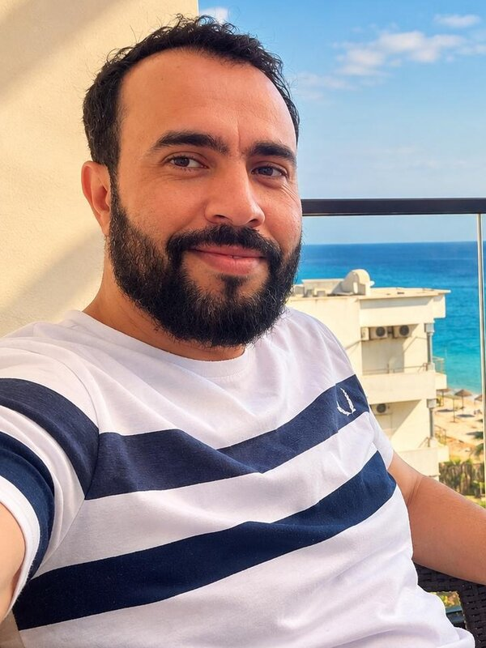

About
About me
I learned sport on the court first, as a basketball coach, before making it the subject of my research. After a bachelor's and a master's degree at the Higher Institute of Sport and Physical Education of Ksar Saïd, I completed a PhD in 2017 at the University of Carthage.
I have been based in Doha since 2013. I split my time between conditioning work, with the Qatar Armed Forces and professional basketball clubs, and research at the National Center of Sports Medicine and Health in Tunis. That double practice is my method: every programme rests on the evidence, and every season on the court raises the next research question.

Education
- 2017
PhD in Biological Sciences and Technology Applied to Physical Activity and Sport
Faculty of Science of Bizerte, University of Carthage, Tunisia
- 2011
Master's degree in Sports Science: Biology and Techniques of Physical Activity
ISSEP Ksar Saïd, Tunisia
- 2009
Bachelor's degree in Sports Education Sciences and Physical Activity Techniques
ISSEP Ksar Saïd, Tunisia
- 2009
Level 2 African Basketball Coaching Certificate
ISSEP Ksar Saïd, Tunisia
Other roles
- 2013 Website and digital platform management, Tunisian Judo Federation
- 2012 Instructor in sports physiology for the 1st and 2nd level coaching diplomas (judo, jujitsu, aikido, kung fu), Tunisian Judo Federation
- 2009–2012 Basketball coach, Manouba University women's team and Club Africain U14
Skills
- Performance assessment: heart-rate monitoring, Optojump and Microgate systems, blood lactate and glucose measurement
- Statistical analysis: SPSS, Statistica, MedCalc, G*Power
- Languages: Arabic (native), French, English
Want to work together?
Coaching, research or a talk, I answer every message personally.